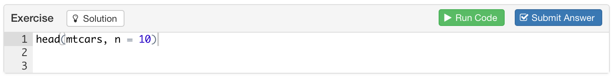

Exercises
Overview
Exercises are interactive R code chunks that allow readers to directly execute R code and see it’s results. There are many options associated with tutorial exercises (all of which are described in more detail below):
| Option | Description |
|---|---|
exercise.cap
|
Caption for exercise chunk (defaults to “Exercise”) |
exercise.eval
|
Whether to pre-evaluate the exercise so the reader can see some default output (defaults to FALSE).
|
exercise.lines
|
Lines of code for exercise editor (default to size of code chunk). |
exercise.timelimit
|
Number of seconds to limit execution time to (defaults to 30). |
exercise.checker
|
Function used to check exercise answers. |
Note that these options can all be specified either globally or per-chunk. For example, the following code sets global default options:
```{r setup, include=FALSE}
library(tutor)
knitr::opts_chunk$set(exercise.timelimit = 60)
```While this code sets per-chunk options:
```{r addition, exercise=TRUE, exercise.timelimit = 60}
1 + 1
```There are also some other specialized chunks that can be used with an exercise chunk, including:
Exercise setup chunks, which enable you to execute code to setup the environment immediately prior to executing submitted code.
Exercise solution chunks which enable you to provide a solution to the execrise that can be optionally viewed by users of the tutorial.
The use of these special chunks is also described in detail below.
Exercise Evaluation
By default, exercise code chunks are NOT pre-evaluated (i.e there is no initial output displayed for them). However, in some cases you may want to show initial exercise output (especially for exercises like the ones above where the user is asked to modify code rather than write new code from scratch).
You can arrange for an exercise to be pre-evaluated (and it’s output shown) using the exercise.eval chunk option. For example:
```{r filter, exercise=TRUE, exercise.eval=TRUE}
# Change the filter to select February rather than January
filter(nycflights, month == 1)
```You can also set a global default for exercise evaluation using knitr::opts_chunk within your global setup chunk, for example:
```{r setup, include=FALSE}
knitr::opts_chunk$set(exercise.eval = TRUE)
```Exercise Setup
Code chunks with exercise=TRUE are evaluated within standalone environments. This means that they don’t have access to previous computations from within the document. This constraint is imposed so that users can execute exercises in any order (i.e. correct execution of one exercise never depends on completion of a prior exercise).
You can however arrange for setup code to be run before evaluation of an exercise to ensure that the environment is primed correctly. There are three ways to provide setup code for an exercise:
Add code to the global
setupchunk. This code is run once at the startup of the tutorial and is shared by all exercises within the tutorial. For example:```{r setup, include=FALSE} nycflights <- nycflights13::flights ``` ```{r filter, exercise=TRUE} # Change the filter to select February rather than January filter(nycflights, month == 1) ``` ```{r arrange, exercise=TRUE} # Change the sort order to Ascending arrange(nycflights, desc(arr_delay)) ```Create a setup chunk that’s shared by several exercises. If you don’t want to rely on global setup but would rather create setup code that’s used by only a handful of exercises you can use the
exercise.setupchunk attribute to provide the label of another chunk that will perform setup tasks. To illustrate, we’ll re-write the previous example to use a shared setup chunk namedprepare-flights:```{r prepare-flights} nycflights <- nycflights13::flights ``` ```{r filter, exercise=TRUE, exercise.setup = "prepare-flights"} # Change the filter to select February rather than January filter(nycflights, month == 1) ``` ```{r arrange, exercise=TRUE, exercise.setup = "prepare-flights"} # Change the sort order to Ascending arrange(nycflights, desc(arr_delay)) ```Create a setup chunk that’s specific to another chunk using a
-setupchunk suffix. To do this give your exercise chunk a label (e.g.filter) then add another chunk with the same label plus a-setupsuffix (e.g.filter-setup). For example:```{r filter-setup} nycflights <- nycflights13::flights ``` ```{r filter, exercise=TRUE} # Change the filter to select February rather than January nycflights <- filter(nycflights, month == 1) ```
Hints and Solutions
You can optionally provide a hint or solution for each exercise that can be optionally displayed by users. To do this simply create a new code chunk with “-hint” or “-solution” chunk label suffix. For example:
```{r filter, exercise=TRUE}
# Change the filter to select February rather than January
nycflights <- filter(nycflights, month == 1)
```
```{r filter-solution}
nycflights <- filter(nycflights, month == 2)
```A “Hint” or “Solution” button is added to the left side of the exercise header region:

Checking Exercises
The tutor package doesn’t directly include features for checking exercise inputs however it does include lower-level hooks that enable other packages to provide tools for exercise checking. You can provide an external function for exercise checking by setting the exercise.checker knitr chunk option within the setup chunk of your tutorial. For example:
```{r setup, include=FALSE}
knitr::opts_chunk$set(exercise.checker = checkthat::check_exercise)
```To arrange for an exercise to be checked, add a “-check” chunk for it includes whatever code is required to check the exercise, for example:
```{r exercise1-check}
# code to check exercise here
```
When you provide a “-check” chunk for an exercise, an additional “Submit Answer” button is added to the exercise editor:

This is provided so that users can experiment with various solutions before formally submitting an answer they believe is correct.
What the code within the “-check” chunk actually does will vary depending on which exercise checker is currently active. The exercise checker function is passed various arguments which provide the context required to check the user’s exercise input:
| Argument | Description |
|---|---|
label
|
Label for exercise chunk. |
user_code
|
R code submitted by the user. |
check_code
|
Code provided within the “-check” chunk for the exercise. |
envir_result
|
The R environment after the execution of the chunk. |
evaluate_result
|
The return value from the evaluate::evaluate function.
|
You can use the feedback function to return the appropriate feedback after performing whatever checks are specified. For example:
check_exercise <- function(label, user_code, check_code, envir_result, evaluate_result, ...) {
tutor::feedback("Great job!", type = "success", location = "append")
}Note that the ... argument is included so that the checker function remains compatible if additional arguments are subsequently added to the API.
Exercise Caption
By default exercises are displayed with caption of “Exercise”. However, in some cases you may want either a custom per-chunk caption or a generic caption with a less tutorial/learning oriented connotation (e.g. “Sandbox” or “R Code”). For example:
```{r setup, include=FALSE}
library(tutor)
knitr::opts_chunk$set(exercise.cap = "R Code")
```Editor Size
By default, the size of the exercise editor provided to users will match the number of lines in your code chunk (with a minimum of 2 lines). If the user adds additional lines in the course of editing the editor will grow vertically up to 15 lines, after which it will display a scrollbar.
You can also specify a number of lines explicitly using the exercise.lines chunk option (this can be done on a per-chunk or global basis). For example, the following chunk specifies that the exercise code editor should be 15 lines high:
```{r add-function, exercise=TRUE, exercise.lines=15}
# Write a function to add two numbers together
add_numbers <- function(a, b) {
}
```Time Limits
To mediate the problem of code which takes longer than expected to run you can specify the exercise.timelimit chunk option or alternatively the global tutor.exercise.timelimit option. For example, to limit a single chunk to 10 seconds of execution time:
```{r exercise1, exercise=TRUE, exercise.timelimit=10}To limit all exercise chunks within a tutorial to 10 seconds of execution time:
```{r setup, include=FALSE}
knitr::opts_chunk$set(exercise.timelimit = 10)
```To establish a global default exercise timeout (note this can be overridden on a per-chunk or per-document basis)
options(tutor.exercise.timelimit = 10)Since tutorials are a highly interactive format you should in general be designing exercises that take no longer than 5 or 10 seconds to execute. Correspondingly, the default value for tutor.exercise.timelimit if not otherwise specified is 30 seconds.